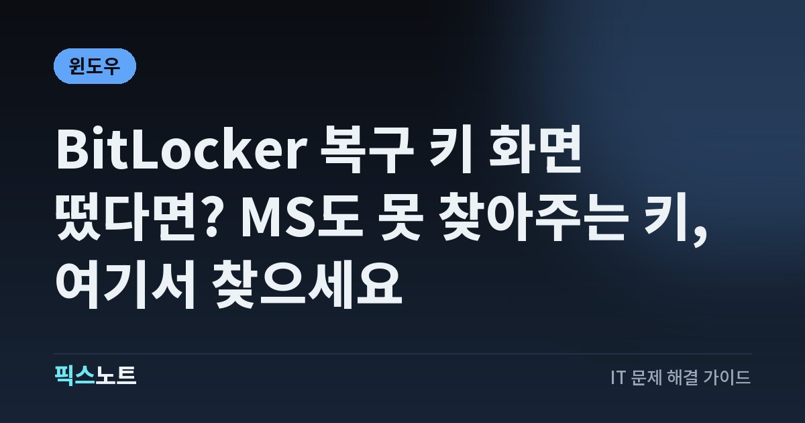

BitLocker 복구 키 화면 떴다면? MS도 못 찾아주는 키, 여기서 찾으세요
윈도우가 부팅 중 BitLocker 복구 키 48자리를 요구할 때 키 찾는 곳과 다시 안 뜨게 하는 법이에요.

아침에 노트북을 켰더니 파란 화면에 ‘BitLocker 복구 키를 입력하세요’가 떠 있다면 정말 당황스럽죠. 이건 고장이 아니라 윈도우의 암호화 잠금이 작동한 거예요. 문제는 Microsoft 고객센터도 잃어버린 키를 찾아주거나 다시 만들어 줄 수 없다는 점이에요. 키가 있을 만한 곳을 순서대로 찾는 법과, 다음에 다시 안 뜨게 하는 법까지 정리했어요.
결론부터: 고장이 아니라 잠금 장치가 작동한 거예요
BitLocker는 드라이브를 암호화해서, 노트북을 잃어버려도 다른 사람이 안의 파일을 못 보게 막는 윈도우 기능이에요. 평소에는 PC가 알아서 잠금을 풀어 주니까 켜져 있는지도 모르고 지내요.
그런데 윈도우가 보안 위험이나 하드웨어 변경을 감지하면 자동으로 잠금을 풀지 않고 48자리 복구 키를 물어봐요. Microsoft 설명으로는 윈도우 Home에서도 ‘장치 암호화’라는 이름으로 같은 암호화가 켜질 수 있어요. Microsoft 계정이나 회사·학교 계정으로 처음 로그인해 설정하면 장치 암호화가 켜지고, 복구 키가 그 계정에 연결돼요.
왜 갑자기 뜰까: 흔한 원인
Microsoft 문서에 나온 복구 화면이 뜨는 대표적인 경우는 이래요.
- BIOS나 UEFI 펌웨어 업그레이드처럼 시작 단계 구성 요소를 업데이트했을 때
- TPM(보안 칩)을 끄거나 지웠을 때, TPM 자체 테스트가 실패했을 때
- 부팅 순서를 바꾸거나 부팅 관리자가 바뀌었을 때
- 노트북을 도킹하거나 도킹을 해제했을 때
- 메인보드를 교체했거나 암호화된 드라이브를 다른 PC로 옮겼을 때
- PIN을 너무 많이 틀렸을 때
제조사 펌웨어 업데이트를 하고 다시 켰더니 복구 화면이 떴다면 가장 흔한 경우예요. 원인을 알아 두면 키를 입력한 뒤 다시 반복되는 걸 막기 쉬워요.
1단계: 복구 키 ID 앞 8자리부터 적기
키를 찾으러 가기 전에 화면부터 확인해요. 복구 화면에는 ‘복구 키 ID’가 표시돼요. 키가 여러 개 저장돼 있을 때 어떤 키를 써야 하는지 이 ID로 구분해요.
- 복구 화면에 보이는 복구 키 ID의 앞 8자리를 종이나 휴대폰에 적어 둬요.
- 윈도우 11 24H2 이상이라면 화면에 키가 연결된 Microsoft 계정의 힌트가 함께 보여요. 어떤 계정으로 로그인해야 할지 여기서 알 수 있어요.
- 화면은 그대로 켜 둔 채, 휴대폰이나 다른 PC로 다음 단계를 진행해요.
2단계: Microsoft 계정에서 키 찾기
개인 PC라면 대부분 여기에 키가 있어요. Microsoft 계정으로 PC를 설정했다면 그 계정에 복구 키가 자동으로 백업되기 때문이에요.
- 휴대폰이나 다른 PC의 웹 브라우저에서 https://aka.ms/myrecoverykey 로 들어가요.
- PC를 설정할 때 썼던 Microsoft 계정으로 로그인해요.
- 목록에서 1단계에 적어 둔 키 ID와 같은 항목을 찾아요.
- 옆에 있는 48자리 복구 키를 잠긴 PC에 입력해요.
회사·학교 계정, 인쇄물, USB도 확인하세요
Microsoft 계정에 없다면 BitLocker를 켤 때 고른 저장 방법에 따라 다른 곳에 있을 수 있어요.
- 회사나 학교 계정으로 로그인하던 PC라면 다른 기기에서 https://aka.ms/aadrecoverykey 로 들어가 회사·학교 계정으로 로그인해요.
- 장치 목록에서 해당 PC를 펼치고 ‘BitLocker 키 보기’를 눌러, 키 ID가 같은 복구 키를 찾아요.
- 접근이 막혀 있으면 회사 IT 지원팀에 키를 요청해요.
- BitLocker를 켤 때 키를 인쇄해 뒀을 수도 있어요. PC 보증서나 중요한 서류를 보관하는 곳을 찾아보세요.
- USB 플래시 드라이브에 저장했다면 잠긴 PC에 꽂고 화면 안내를 따르거나, 다른 기기에서 그 USB 안의 텍스트 파일을 열어 키를 확인해요.
입력이 어려울 때: 내레이터와 화상 키보드
48자리를 한 번에 정확히 치기가 생각보다 어려워요. 숫자를 틀리면 처음부터 다시 확인하면 되니 서두르지 마세요.
- 키를 찾은 화면과 잠긴 PC 화면을 나란히 두고 앞에서부터 차례로 입력해요.
- 윈도우 복구 환경(Windows RE)에서 뜬 복구 화면이라면 Win + Ctrl + Enter를 눌러 내레이터를 켤 수 있어요.
- 키보드가 없는 태블릿형 기기라면 입력 칸을 탭하면 화상 키보드가 나와요.
주의: 키를 찾기 전에 이것만은 하지 마세요
복구 화면이 떴다고 급하게 초기화부터 하면 돌이킬 수 없어요.
- PC 초기화: Microsoft는 키를 못 찾아서 장치를 초기화하면 모든 파일이 제거된다고 안내해요.
- 드라이브 분리·교체: 암호화된 드라이브를 다른 PC에 옮겨도 키 없이는 열리지 않아요.
- 고객센터만 믿고 기다리기: Microsoft 지원은 잃어버린 복구 키를 검색하거나 제공하거나 다시 만들 수 없어요.
다시 안 뜨게: 펌웨어 업데이트 전 일시 중단, 키는 지금 확인
키를 입력해 들어왔다면 같은 일이 반복되지 않게 준비해요.
- 지금 바로 https://aka.ms/myrecoverykey 에서 내 PC의 키가 보이는지 확인해요. 보이면 인쇄하거나 안전한 곳에 따로 적어 둬요.
- 앞으로 BIOS·UEFI 펌웨어를 업데이트할 계획이 있다면 그 전에 BitLocker 보호를 일시 중단해요. Microsoft는 계획된 펌웨어 업그레이드 전에 일시 중단하면 복구 화면을 피할 수 있다고 안내해요.
- 일시 중단해도 드라이브는 암호화된 상태로 남고, 다시 부팅하면 보호가 자동으로 다시 켜져요.
자주 묻는 질문
BitLocker 복구 키는 어디서 확인하나요?
개인 PC라면 다른 기기에서 aka.ms/myrecoverykey에 PC 설정 때 쓴 Microsoft 계정으로 로그인해 확인하는 게 가장 빨라요. 회사·학교 PC는 aka.ms/aadrecoverykey나 IT 담당자, 그 밖에는 인쇄물과 USB를 확인하세요.
Microsoft 고객센터에 문의하면 키를 받을 수 있나요?
받을 수 없어요. Microsoft는 지원팀이 잃어버린 BitLocker 복구 키를 검색하거나 제공하거나 다시 만들 수 없다고 공식적으로 안내해요. 키는 내가 저장해 둔 곳에서만 찾을 수 있어요.
윈도우 Home인데 BitLocker가 켜져 있을 수 있나요?
네, 그럴 수 있어요. Home에서는 ‘장치 암호화’라는 이름으로 같은 암호화가 쓰이고, Microsoft 계정이나 회사·학교 계정으로 처음 설정하면 자동으로 켜지면서 키가 그 계정에 연결돼요.
키를 끝내 못 찾으면 파일은 어떻게 되나요?
키 없이는 암호화된 드라이브를 열 수 없어요. Microsoft 안내대로 복구 옵션으로 PC를 초기화해야 하고, 이때 모든 파일이 지워져요. 그래서 초기화 전에 저장 가능한 곳을 전부 확인하는 게 중요해요.